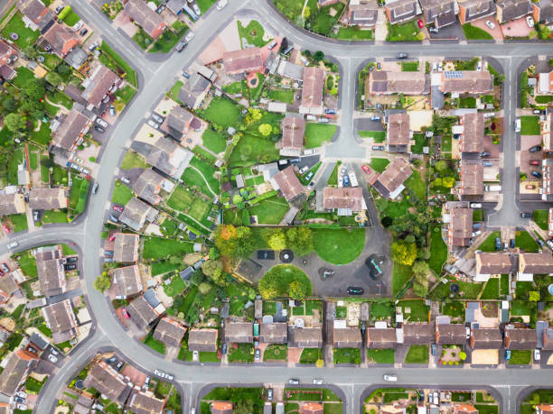
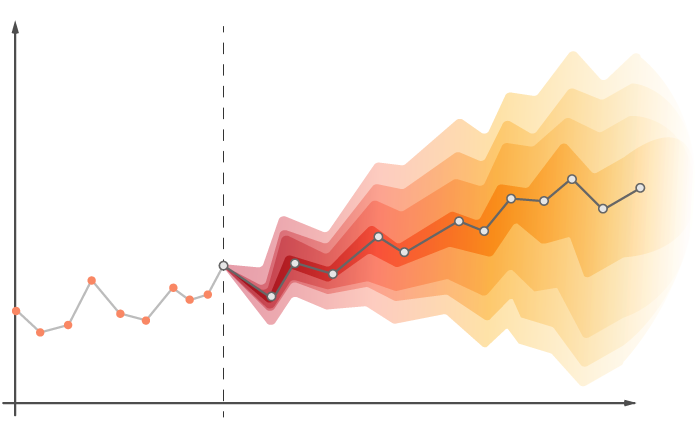

Daniel Darquea
Machine Learning Engineer & Data Scientist
I build intelligent solutions that transform raw data into real-world impact.
About Me
Hello! I'm Daniel Darquea, a data scientist & machine learning engineer passionate about turning data into actionable insights. Below is a selection of my favorite projects. Feel free to explore!
Projects
Deep Learning

Detection of Obstructive Sleep Apnea using Deep Learning on Audio Signals. Part 1: Tracheal Microphone Data
Detection of obstructive apnea events from tracheal audio recordings during polysomnography.
Actions
Techniques

Building segmentation from satellite imagery
Building segmentation using satellite imagery
Actions
Techniques
Rocket League Game Score Prediction
Predict team scores in Rocket League within 10 seconds
Actions
Techniques
Machine Learning

Sales Forecast for Large Scale Bookstore
Predict future sales using time series forecasting
Actions
Techniques
California Housing Price Prediction
Predict median house prices based on property features
Actions
Techniques
Optimization

DATATON 2023 BANCOLOMBIA: Linear Optimization Problem
Schedule Workers Optimization Problem
Actions
Techniques
Santa 2022 : The Christmas Card Conundrum Challenge
Linear programming model minimizing logistics cost across multiple warehouses.
Optimize a traveling salesman problem for image printing.
Actions
Techniques
Contact
Have an exciting idea or opportunity? Let's talk!
bryanddarquea@gmail.com